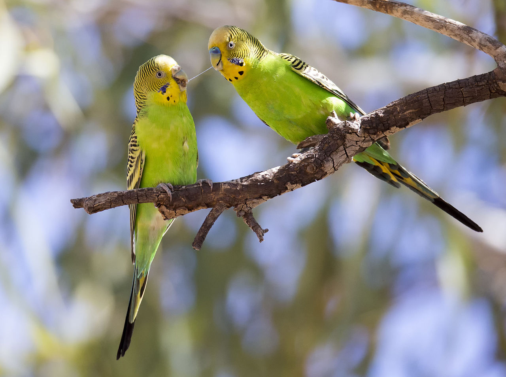
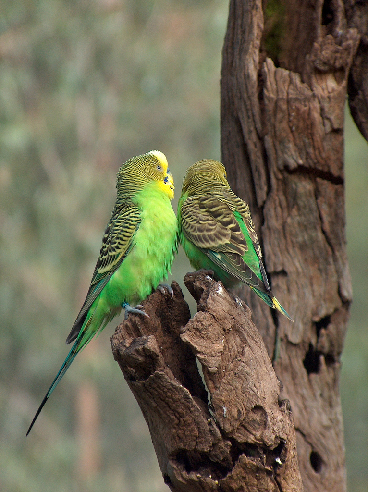
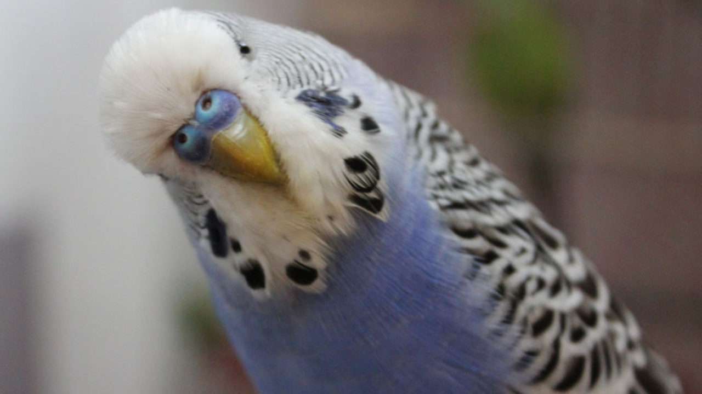
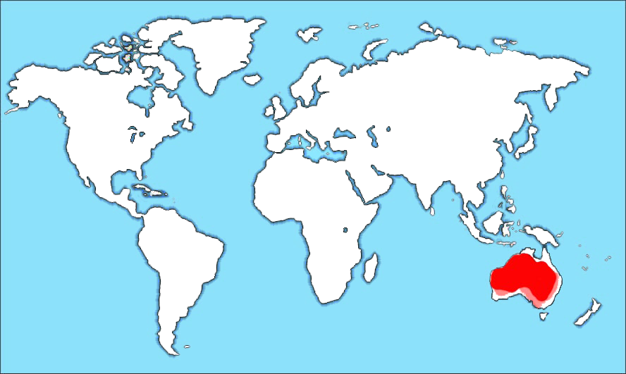

Волни́стый попуга́йчик (лат. Melopsittacus undulatus) — птица семейства попугаевых. Единственный вид в роде волнистые попугаи (Melopsittacus). Особи отличаются шумом и болтливостью, довольно легко запоминают слова и выражения, которые повторяют много раз при «общении» с человеком и даже с другими домашними птицами. В большинстве случаев заученные слова и выражения повторяют без связной логики.
Длина тела 17—19,8 см, выставочные особи длиной до 21—23 см. Длина крыла 9,5—10,5 см, хвоста — 8—10 см; вес 40—45 г. Благодаря хвосту кажутся гораздо крупнее.
Основная окраска оперения покровительственного травянисто-зелёного цвета. Передняя часть головы и горло жёлтые. По бокам головы расположено по вытянутому фиолетовому пятну, под которыми находятся по три с каждой стороны горла чёрных пятнышка.  Задняя часть головы, затылок и верх спины с тёмной бурой волнистостью по жёлтому фону. Волнистость на голове от тонкой и нежной переходит на спину в более широкую и грубую. У молодых птиц волнистый рисунок не такой чёткий, как у взрослых, и начинается сразу от восковицы. Такой окрас сохраняется у них до тех пор, пока не появится жёлтая маска. У молодых птиц хвост намного короче, чем у взрослых. Хвост длинный, ступенчатой формы.
Перья на лбу у самцов обладают интересным свойством: они флуоресцируют под действием ультрафиолетовых лучей. В природных условиях наличие флуоресценции играет важную роль при выборе самками партнёра для гнездования. Проводился эксперимент: две клетки с самцами освещали дневным светом, но одну из них экранировали стеклом от прямого солнечного ультрафиолета. В 9 случаях из 10 самка выбирала самца, находящегося в неэкранированной клетке[3].
Клюв мощный и изогнутый. Сверху он покрыт крепким роговым слоем. У основания сильно выделяется восковица, на которой расположены носовые отверстия. Клюв у попугаев, в отличие от других птиц, очень подвижный благодаря верхней челюсти, которая не срастается с черепом, а соединена с ним сухожильной связкой. Верхняя челюсть намного длиннее нижней. Нёбные кости хорошо развиты. Такой клюв является универсальным инструментом для срывания и измельчения небольших веток, листьев, семян и различных плодов. Клювом волнистые попугаи поднимают и переносят различные предметы.  Кроме того, они используют его для лазания по ветвям деревьев, прутьям клетки и сетке вольера, иногда при обороне. Язык у волнистых попугаев короткий и толстый, немного закруглённый. На кончике он покрыт роговым слоем. У большинства на внутренней стороне надклювья имеются узкие роговые зубцы, которые вроде напильника оттачивают переднюю часть надклювья и очищают зёрна от шелухи, а также используются для срывания плодов и их разгрызания. У птенцов клюв — тёмный, у взрослых птиц — соломенно-жёлтый, с зеленоватым оттенком. Над клювом птиц вокруг ноздрей имеется хорошо выраженная восковица. Пол птиц легко различают по цвету восковицы: у молодого самца она фиолетовая, у взрослого ярко-синяя, у самки: молодой — голубая (вокруг ноздрей более светлый ободок), у взрослой — голубая или коричневая.
Шея у попугайчиков очень подвижная, поскольку основную хватательную функцию у них выполняет клюв. Скелет же туловища, напротив, малоподвижен, поскольку он в основном выполняет опорную функцию.
Полёт волнистого попугайчика немного дугообразный и напоминает полёт ласточки. При посадке крылья сгибаются вниз, делая её похожей на посадку перепела.
Лапы серовато-синего цвета, и светло розового цвета, очень сильные и цепкие, когти тёмно-синие, чёрные или белые. На каждой лапе по 4 длинных, загнутых и довольно острых пальца, 2 из которых направлены вперёд, а 2 — назад. Благодаря такой конструкции попугаи очень ловко лазают по ветвям, ходят по земле, а также могут захватывать лапой различные предметы (в том числе корм) и переносить их или удерживать возле клюва.
Обитает этот попугайчик в Австралии и на некоторых прилегающих островах. Австралийские аборигены называли волнистого попугайчика «bedgerigas», что значит «пригодные для пищи». Родиной волнистых попугайчиков является Австралия. На этом материке они большими стаями кочуют с места на место в поисках пищи и воды, временно поселяясь на травянистых равнинах, где могут питаться семенами трав. Волнистые попугайчики летают очень быстро, что позволяет преодолевать огромные расстояния в поисках еды и воды.
Волнистый попугайчик является самым многочисленным из всех попугаев Австралии.  Он обитает на большей части материка (кроме северных районов, покрытых густыми лесами), вдоль восточного и юго-западного побережья, а также на острове Тасмания и некоторых других островах. Гнездятся волнистые попугайчики в основном в полупустынных частях материка, где порой можно встретить миллионные стаи. Так, в северной части Австралии волнистый попугайчик приступает к гнездованию в любое время года, как только закончатся дожди, а на юге птицы размножаются в основном в ноябре и декабре. В настоящее время количество волнистых попугайчиков, содержащихся в неволе, значительно больше, чем в природе. Это связано с тем, что человек сильно изменил ландшафт Австралии, где обитают на свободе эти экзотические птицы.
Пернатым обитателям Австралии приходится приспосабливаться к изменениям условий и питаться пшеницей — основной зерновой культурой Австралии, выращиваемой на больших территориях. Однако для волнистых попугайчиков зёрна пшеницы слишком крупные.
Населяют полупустынные и степные местности, предпочитая участки с редкими деревьями. Эти попугайчики стремительны в полёте и изящны в движениях, хорошо ходят по земле и лазают по деревьям. Живут стаями. Стаи могут насчитывать от 20 до нескольких сот особей.